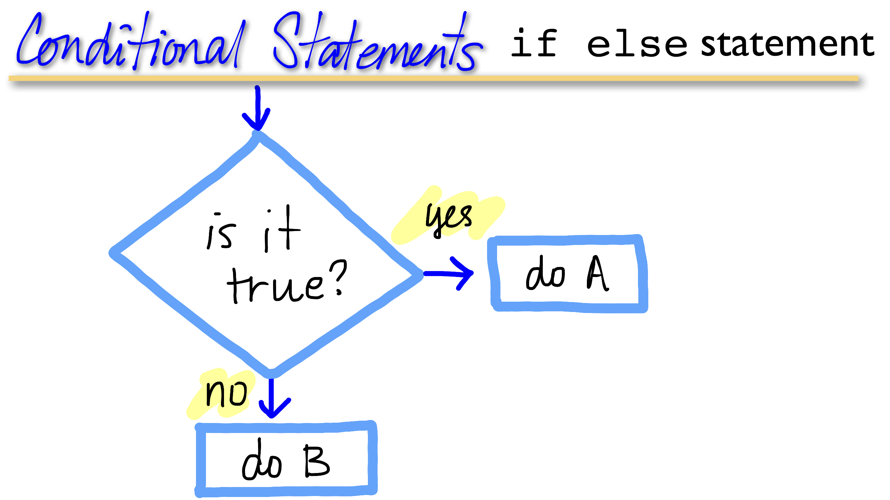
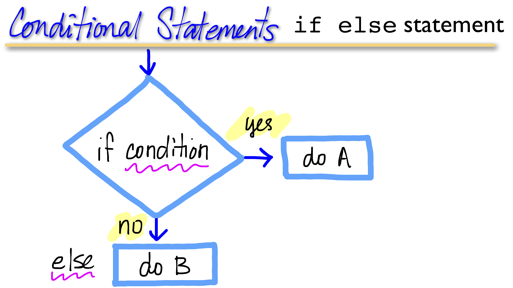
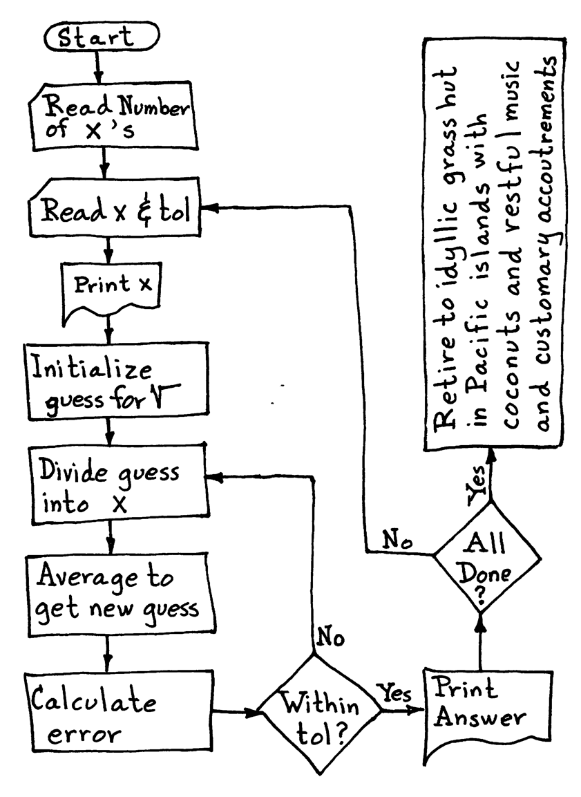

x <- runif(n=1, min=0, max=10)
x[1] 6.74453if(x > 6) {
y <- 10
} else if (x > 3){
y <- 5
} else { y <- 0 }
x[1] 6.74453y[1] 10Material for this lecture was borrowed and adopted from
R is not only a collection of functions for data analysis and matrix math, but also a fully-featured programming language with all of the usual conditional statements.
There are times when we want to go beyond simply a linear step through the code, but to make execution conditional, in order to control the flow of execution of the code.
A basic conditional statement:

Anytime in the code where decisions need to be made:
Optimzation: A common task is to decide when to exit out of a loop. For example when we are approximatig a solution and we donʻt know how many iterations it will take to get “close enough” to the true solution. In this case, we would want to repeat until we reach the condition then stop and return the answer.
Flexibility: Depending on a value, you may want to execute different code. For example, if we are writing a function with multiple options. The function will do the same general computation but we may want to provide different options depending on the users needs. We can add optional arguments. If the user changes them, the function will execude the extra option.
The flow of execution can be diagrammed in a flowchart, and is really helpful for seeing the logical structure of the project. It also encourages modularity and reusablility of your code.
A flowchart can be really helpful for visualizing your computations, and in particular where a function or loop would be helpful, or where variables need to be updated or sent to output. For example for computing the sum using a loop:

The different types of actions are represented by shapes, with the direction of flow indicated by arrows connecting the shapes:
Imagine if you were to flowchart this code below. Anytime you find yourself cutting and pasting code, it is a clue that you should consider a loop or a function.

You should code it only once, make the computer repeat!

if and else: testing a condition and acting on it
ifelse: a variant of if and else in one line
switch: a convenience conditional for multiple executable options
for: execute a loop a fixed number of times
while: repeat a loop while a condition is true
repeat: execute an infinite loop (must break out of it to stop)
break: break the execution of a loop
next: skip an interation of a loop
if-else
if-else is the most commonly used conditional statement in programming. If a condition is true, a statement is executed:

if-else comes in many flavors:
if
If the condition is TRUE, execution happens. If FALSE, nothing happens:
if(<condition>) {
## do something
}
## Continue with rest of codeif-else
If-else allows for a different action when the condition is false:
if(<condition>) {
## do something
}
else {
## do something else
}if and else can be daisy-chained:
if-else if-else if-else etc.You can have a series of tests, which will stop and execute the statement at the condition that is TRUE. (Everything following will be ignored):
if(<condition1>) {
## do something
} else if(<condition2>) {
## do something different
} else if(<condition2>) {
## do something different
} else {
## do this if none of the above is true
} x <- runif(n=1, min=0, max=10)
x[1] 6.74453if(x > 6) {
y <- 10
} else if (x > 3){
y <- 5
} else { y <- 0 }
x[1] 6.74453y[1] 10With the if-else structure we can test multiple conditions on the same variable. Here, three ranges of values for x. Of course, the else conditional is not necessary. You could just have a string of ifs:
if(<condition1>) {
}
if(<condition2>) {
}As long as your logic is sound (and you have them in the right order), you could be OK.
NOTE it is always important to TEST your code against several datasets for which you can verify the answers. Be sure to try cases where your code might get tripped up. Anticipating the errors will have you a lot of headache.
while Loopswhile loops begin by testing a condition.
TRUE, then they execute the code contained within the loop.FALSE the loop is exited (no execution).count <- 0
while(count < 10) {
print(count)
count <- count + 1
}[1] 0
[1] 1
[1] 2
[1] 3
[1] 4
[1] 5
[1] 6
[1] 7
[1] 8
[1] 9while loops can potentially result in infinite loops if not written properly. Use with care!
Sometimes there will be more than one condition in the test.
z <- 5
set.seed(1)
while(z >= 3 && z <= 10) {
coin <- rbinom(1, 1, 0.5)
if(coin == 1) { ## random walk
z <- z + 1
} else {
z <- z - 1
}
}
print(z)[1] 2& is the logical and - both conditions must be true in order to return TRUE
| is the logical or - only one condition must be true in order to return TRUE
What’s the difference between using one & or two && (or one | vs. ||)?
If you use only one &, these are vectorized operations, meaning they will evaluate the logical conditional on the vector, and can return a vector, like this:
-2:2[1] -2 -1 0 1 2((-2:2) >= 0) & ((-2:2) <= 0)[1] FALSE FALSE TRUE FALSE FALSEIf you use two &&, then these are operations on single values.
2 >= 0[1] TRUE(2 >= 0) && (-2 <= 0)[1] TRUE(-2 >= 0) && (-2 <= 0)[1] FALSErepeat Loopsrepeat initiates an infinite loop right from the start. These are not commonly used in statistical or data analysis applications, but they do have their uses.
The only way to exit a repeat loop is to call break.
One possible paradigm might be in an iterative algorithm where you may be searching for a solution and you do not want to stop until you are close enough to the solution.
In this kind of situation, you often don’t know in advance how many iterations it’s going to take to get “close enough” to the solution.
x0 <- 1
tol <- 1e-8
repeat {
x1 <- computeEstimate()
if(abs(x1 - x0) < tol) { ## Close enough?
break
} else {
x0 <- x1
}
}The above code will not run if the computeEstimate() function is not defined (I just made it up for the purposes of this demonstration).
The loop above is a bit dangerous because there is no guarantee it will stop.
You could get in a situation where the values of x0 and x1 oscillate back and forth and never converge.
Better to set a hard limit on the number of iterations by using a for loop and then report whether convergence was achieved or not.
next, break
next is used to skip an iteration of a loop.
for(i in 1:100) {
if(i <= 20) {
## Skip the first 20 iterations
next
}
## Do something here
}break is used to exit a loop immediately, regardless of what iteration the loop may be on.
for(i in 1:100) {
print(i)
if(i > 20) {
## Stop loop after 20 iterations
break
}
}Both flowcharts and pseudocode can help to diagram the logic and modularity of the code:

if, while, and for allow you to control the flow of an R programLetʻs write a program to calculate the square root of a number, following the Fortran Coloring Book:
